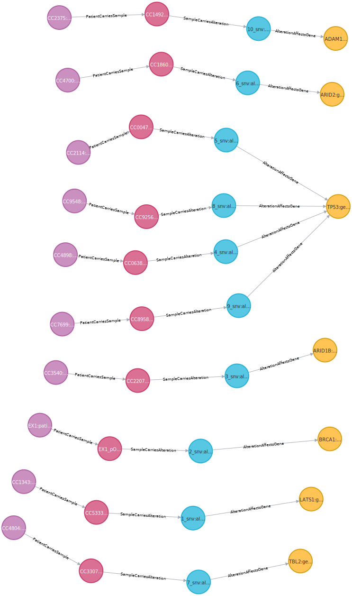
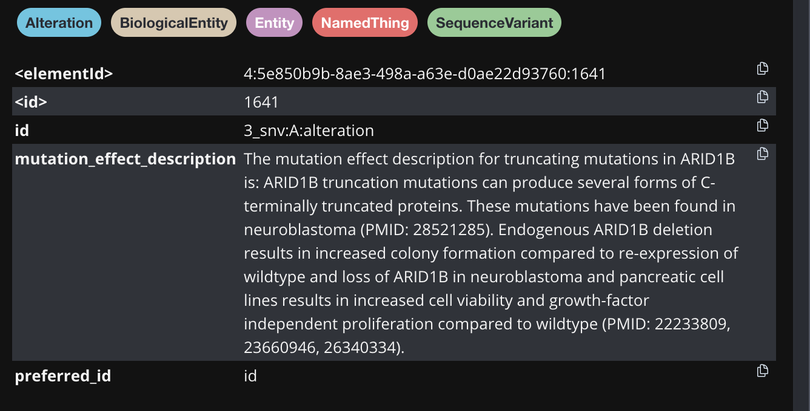
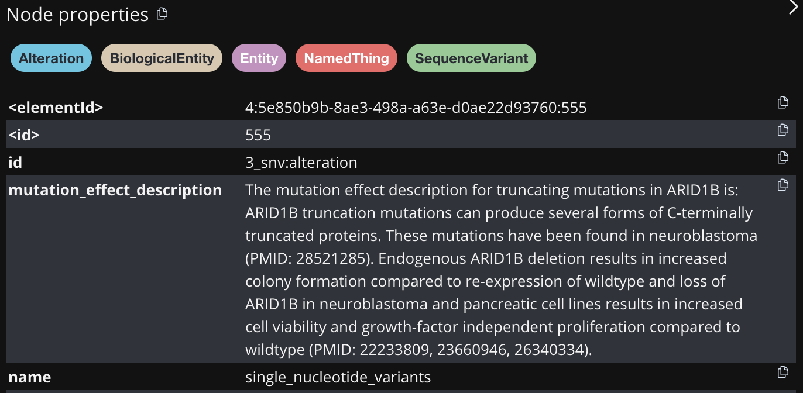
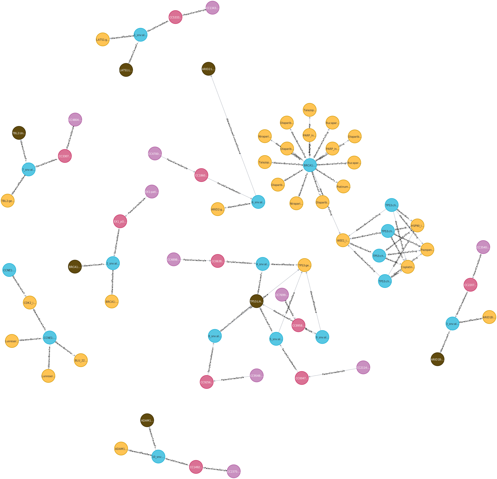
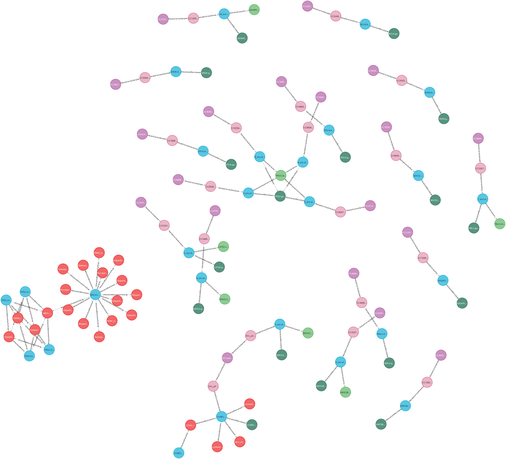

! poetry install --no-rootInstalling dependencies from lock file
No dependencies to install or update
OntoWeaver is a tool for constructing Semantic Knowledge Graphs (SKG) from iterative data, such as CSV files. It allows users to define mappings between the data and an ontology, enabling the creation of a graph that can be queried and analyzed. This notebook provides a step-by-step guide on how to use OntoWeaver, on top of BioCypher, to build an SKG from clinical and genomic data, aimed to be used for personalized medicine.
We define personalized medicine as the targeted inhibition of driver events, with some of its main goals being: - the targeted inhibition of driver events, - understanding the biological mechanisms thereof, and - the identification of treatments and their underlying mechanisms.
Imagine you are a geneticist and are studying alterations in ovarian cancer, with an aim to find the best treatment for a given patient. Let’s assume that the patient has the following alteration: brca1:chr17:43094490:CA:C, in the BRCA1 gene.
In order to find the appropriate treatment, you would currently have to conduct a manual search through existing databases, and recover information about the affected gene, possible currently available treatments, and the biological pathways these treatments are targeting.
In practice, this would require:
Seeing that a single patient can have a number of alterations affecting different regions, this can elongate the process of database exploration.
Our approach, therefore, combines different databases into a single Semantic Knowledge Graph.
In this tutorial, we are building a SKG from different sources: - Single Nucleotide Variants (SNVs): A data table containing information about single nucleotide variants found in ovarian cancer patients. - Copy Number Alterations (CNAs): A data table containing information about copy number alterations found in ovarian cancer patients. - Treatments (OncoKB): A public database that contains biological and clinical information about genomic alterations in cancer. - The examples in this vignette are based on anonymized, shuffled and subsetted data from real databases, with the alterations of patients replaced by numbers 1 to 10 followed by the type of alteration (SNV or CNA).
Columns: - patient_id: Id of the patient. - sample_id: Id of the sample. - hugoSymbol: Gene Symbol. - alteration: Mutation in the DNA sequence in the format: HugoSymbol:chr:DNA_sequences_changes. - outcome: Gene outcome. Example: Gain-of-function, Loss-of-function.
Columns: - patient_id: Id of the patient. - sample_id: Id of the sample. - hugoSymbol: Gene Symbol. - alteration: AMPLIFICATION or DELETION. - variantSummary: Description of the alteration. - tumorTypeSummary: Summary of knowledge about this mutation.
Columns: - alteration: Mutation in the DNA sequence in the format HugoSymbol:chr:DNA_sequences_changes for single nucleotide variants and HugoSymbol:AMPLIFICATION|DELETION for copy number alterations. - treatment: Name of the drug.
We use Poetry to manage dependencies and virtual environments. If you don’t have it installed, you can install it with:
! poetry install --no-rootInstalling dependencies from lock file
No dependencies to install or update
So far, the OntoWeaver package works under python 3.12. If you have multiple python versions installed, you can direct Poetry to use the correct one with the following command: ! poetry env use $(which python3.12)
! eval $(poetry env activate) # new implementation of `poetry shell`First, let’s look at the available data we have from the Single Nucleotide Variants database.
import pandas as pd
df = pd.read_csv("data/jobim_subsets/1_Simple_mapping/snv_subset_1.csv")
df| patient_id | sample_id | hugoSymbol | alteration | |
|---|---|---|---|---|
| 0 | CC1343 | CC5333_p2OvaL1_DNA1 | LATS1 | 1_snv |
| 1 | EX1 | EX1_pOvaL1_DNA1 | BRCA1 | 2_snv |
| 2 | CC3540 | CC2207_pPer1_DNA1 | ARID1B | 3_snv |
| 3 | CC4898 | CC0638_iOme_DNA1 | TP53 | 4_snv |
| 4 | CC2114 | CC0047_iBow1_DNA1 | TP53 | 5_snv |
| 5 | CC4700 | CC1860_pOvaR1_TR | ARID2 | 6_snv |
| 6 | CC4804 | CC3307_pAdnL1_DNA3 | TBL2 | 7_snv |
| 7 | CC9548 | CC9256_pPer_DNA4 | TP53 | 8_snv |
| 8 | CC7699 | CC8958_pOva_DNA1 | TP53 | 9_snv |
| 9 | CC2375 | CC1492_iOth1_DNA1 | ADAM12 | 10_snv |
We want to build a KG with a simple schema, encompassing patient IDs, the IDs of the samples they provided, the sequence variants they have, and the genes those variants are in. We first start by defining the schema of the desired graph, which would in our case look like this:
from IPython.display import SVG, display
display(SVG("figures/jobim/Example_graph_1.svg"))
After defining the schema, we need to define the mappings between the data and the ontology. The mappings will specify how each column in the CSV files corresponds to a node or edge in the graph. This is defined in the OntoWeaver mapping files, which are YAML files that describe the structure of the data and how it should be transformed into nodes and edges in the graph.
Below we display the mapping file we use for the build up of the first example graph of the SNV database.
import yaml
from IPython.display import display, JSON
# Read the file content.
with open("jobim/1_Simple_mapping/snv.yaml", "r") as file:
content = yaml.safe_load(file)
# Display the content.
display(JSON(content))<IPython.core.display.JSON object>OntoWeaver maps the databases row by row, so the mapping file first specifies how the subject node of each row mapped will be created. We first define that the subject ID will be created from the patient_id, using the columns keyword, and that the node will be of type patient, using the to_subject keyword.
For each column we want to map, we must define the strategy of the extraction of the values from each cell of the column, which will serve as the ID of the created node. For this, we use transformers. OntoWeaver provides a robust set of transformers that can be used to extract and transform data from the columns of the CSV files. These transformers can be used to manipulate the data in various ways, such as combining several column values, splitting concatenated values, and many more. Detailed description of the transformers can be found in the OntoWeaver documentation. Users are also able to program their own transformers to suit their specific needs.
For simplicity, in this first section we keep to the usage of only the map transformer, which simply extracts the data as it is from the cells of the defined column. For each transformer we define the columns to use for the extraction of the data, as well as the to_object keyword, which defines the type of node to be created from the extracted data, such as gene or sample. In addition to that, we also define the edge which is connecting the created nodes to the subject node, using the via_relation keyword.
In some cases we do not want to use the default subject type for each row, but rather use a different column as the start point of an edge. In this case, we can use the from_subject keyword to specify the type from which we want the edge to start from. For example, in the mapping file above, we use the from_subject keyword to create an edge type alteration_affects_gene from the alteration node, to the gene node, thus voiding the start of the edge from the patient node. which is the default subject type for each row.
After having identified the general structure of the graph and the definition of the mappings, we must now define the BioCypher schema, which is a YAML file that describes the structure of the graph. The schema defines the nodes and edges in the graph, their properties, and how they are related to each other. You can find more information about the BioCypher schema in the BioCypher documentation.
import yaml
from IPython.display import display, JSON
# Read the file content.
with open("jobim/1_Simple_mapping/biocypher_schema.yaml", "r") as file:
content = yaml.safe_load(file)
# Display the content.
display(JSON(content))<IPython.core.display.JSON object>Below we show the OntoWeaver CLI command, which is used to run the mapping process. The command specifies the input CSV file, the mapping file, the Biocypher configuration file, and the Biocypher schema file. The --biocypher-config option points to a YAML file that contains the configuration for Biocypher, while the --biocypher-schema option points to a YAML file that defines the schema of the graph.
More information about the OntoWeaver CLI can be found by running:
! ontoweave --helpINFO -- This is BioCypher v0.9.6.
INFO -- Logging into `biocypher-log/biocypher-20250704-145211.log`.
usage: ontoweave [-h] [-c FILE] [--print_config[=flags]] [-C FILE] [-s FILE]
[-p NB_CORES] [-i] [-r [PYTHON_MODULE ...]] [-S CHARACTER]
[-a {suffix,prefix,none}] [-A CHARACTER] [-E]
[-l {DEBUG,INFO,WARNING,ERROR,CRITICAL}] [-v] [-V]
[-Ds CHARACTER] [-D]
FILE:MAPPING [FILE:MAPPING ...]
A command line tool to run OntoWeaver mapping adapters on a set of tabular data, and call the created BioCypher export scripts.
default config file locations:
['/etc/xdg/ontoweave/ontoweave.yaml', '/Users/mbaric/.config/ontoweave/ontoweave.yaml', '../ontoweaver/ontoweave.yaml'], Note: no existing default config file found.
positional arguments:
FILE:MAPPING Run the given YAML MAPPING to extract data from the tabular FILE (usually a CSV). Several mappings can be passed to ontoweave. You may also use the same mapping on different data files. If set to `STDIN`, will read the list of mappings from standard input.
options:
-h, --help show this help message and exit
-c FILE, --config FILE
The ontoweave configuration file, which can host the same arguments than the command line tool. [default: /etc/xdg/ontoweave/ontoweave.yaml or /Users/mbaric/.config/ontoweave/ontoweave.yaml or ../ontoweaver/ontoweave.yaml]
--print_config[=flags]
Print the configuration after applying all other arguments and exit. The optional flags customizes the output and are one or more keywords separated by comma. The supported flags are: comments, skip_default, skip_null.
-C FILE, --biocypher-config FILE
The BioCypher config file (the one managing ontologies and the output backend). [default: biocypher_config.yaml]
-s FILE, --biocypher-schema FILE
The BioCypher schema file (the one managing node and edge types). [default: schema.yaml]
-p NB_CORES, --parallel NB_CORES
Number of processor cores to use when processing with multi-threading. `0` means a sequential processing (no parallelization, the default). Use 'auto' to let ontoweave do its best to use a good number. [default: 0]
-i, --import-script-run
If passed ontoweave will call the import scripts created by Biocypher for you.
-r [PYTHON_MODULE ...], --register [PYTHON_MODULE ...]
Register all transformers available in the given module.
-S CHARACTER, --prop-sep CHARACTER
The character used to separate property values fused in the same property at the reconciliation step. [default: ;]
-a {suffix,prefix,none}, --type-affix {suffix,prefix,none}
Where to add the type string to the ID label. [default: none]
-A CHARACTER, --type-affix-sep CHARACTER
Character used to separate the label from the type affix. [default: :]
-E, --pass-errors When an error occurs, log is, and then try to continue processing. If not passed, the default behavior is to raise errors immediatly and stop execution.
-l {DEBUG,INFO,WARNING,ERROR,CRITICAL}, --log-level {DEBUG,INFO,WARNING,ERROR,CRITICAL}
Configure the log level. [default: WARNING]
-v, --validate-only Only validate the given input data, do not apply the mapping.
-V, --validate-output
Validate the output data against the mapping rules.
-Ds CHARACTER, --database-sep CHARACTER
Character used to separate values in the database.
-D, --debug Run in debug mode. implies `--log-level DEBUG`, disables `--pass-errors`. NOTE: this will disable explicit return codes and show the call stack.
Example usage:
ontoweave table.csv:mapping.yaml
ontoweave --biocypher-config biocypher_config.yaml --biocypher-schema schema.yaml table1.csv:mapping1.yaml table2.tsv:mapping1.yaml table3.parquet:mapping2.yaml --import-script-runBelow we show the command that we use to run the mapping process for the first example graph of the SNV database. The command specifies the input CSV file, the mapping file, the Biocypher configuration file, and the Biocypher schema file. The -a suffix option is used to add a suffix to the generated nodes. Each suffix represents the ontological type of the node.
! ontoweave ./data/jobim_subsets/1_Simple_mapping/snv_subset_1.csv:./jobim/1_Simple_mapping/snv.yaml --biocypher-config ./jobim/1_Simple_mapping/biocypher_config.yaml --biocypher-schema ./jobim/1_Simple_mapping/biocypher_schema.yaml -a suffixINFO -- This is BioCypher v0.9.6.
INFO -- Logging into `biocypher-log/biocypher-20250704-145213.log`.
/Users/mbaric/ontoweaver-vignette/biocypher-out/20250704145217/neo4j-admin-import-call.shIn addition to the ontoweave CLI, you can also write a short script using the available extraction functions to achieve the same result.
import biocypher
import ontoweaver
# Define the path to the mapping file.
data_mapping = {f"./data/jobim_subsets/1_Simple_mapping/snv_subset_1.csv": f"./jobim/1_Simple_mapping/snv.yaml"}
# Extract nodes and edges from the mapping file.
nodes, edges = ontoweaver.extract(filename_to_mapping=data_mapping, affix = "suffix")
# Write the nodes and edges using BioCypher.
bc = biocypher.BioCypher(
biocypher_config_path=f"biocypher_config.yaml",
schema_config_path=f"biocypher_schema.yaml",
)
bc.write_nodes(nodes)
bc.write_edges(edges)
bc.write_import_call()--------------------------------------------------------------------------- TypeError Traceback (most recent call last) Cell In[80], line 11 8 nodes, edges = ontoweaver.extract(filename_to_mapping=data_mapping, affix = "suffix") 10 # Write the nodes and edges using BioCypher. ---> 11 bc = biocypher.BioCypher( 12 biocypher_config_path=f"biocypher_config.yaml", 13 schema_config_path=f"biocypher_schema.yaml", 14 ) 16 bc.write_nodes(nodes) 17 bc.write_edges(edges) File ~/Library/Caches/pypoetry/virtualenvs/decider-genetics-Q0c7RTWb-py3.12/lib/python3.12/site-packages/biocypher/_core.py:94, in BioCypher.__init__(self, dbms, offline, strict_mode, biocypher_config_path, schema_config_path, head_ontology, tail_ontologies, output_directory, cache_directory, db_name) 78 def __init__( 79 self, 80 dbms: str = None, (...) 91 ): 92 # Update configuration if custom path is provided 93 if biocypher_config_path: ---> 94 _file_update(biocypher_config_path) 96 if db_name: 97 logger.warning( 98 "The parameter `db_name` is deprecated. Please set the " 99 "`database_name` setting in the `biocypher_config.yaml` file " 100 "instead.", 101 ) File ~/Library/Caches/pypoetry/virtualenvs/decider-genetics-Q0c7RTWb-py3.12/lib/python3.12/site-packages/biocypher/_config/__init__.py:131, in update_from_file(path) 126 def update_from_file(path: str): 127 """ 128 Update the module configuration from a YAML file. 129 """ --> 131 config(**_read_yaml(path)) TypeError: biocypher._config.config() argument after ** must be a mapping, not NoneType
The generated graph is visualized in Neo4j, and looks like this:
display(SVG("figures/jobim/graph_1.svg"))
It is often useful to attach additional metadata to the nodes and edges in the graph. This metadata can include information such as the source of the data, the date of creation, or any other relevant information that can help in understanding the context of the data. This metadata is attached via the usage of properties.
Let’s look at an extended version of the database we used in the previous section:
df = pd.read_csv("data/jobim_subsets/2_Properties/snv_subset_2.csv")
df| patient_id | sample_id | hugoSymbol | alteration | mutationEffectDescription | |
|---|---|---|---|---|---|
| 0 | CC1343 | CC5333_p2OvaL1_DNA1 | LATS1 | 1_snv | The mutation effect description for truncating... |
| 1 | EX1 | EX1_pOvaL1_DNA1 | BRCA1 | 2_snv | The mutation effect description for truncating... |
| 2 | CC3540 | CC2207_pPer1_DNA1 | ARID1B | 3_snv | The mutation effect description for truncating... |
| 3 | CC4898 | CC0638_iOme_DNA1 | TP53 | 4_snv | The mutation effect description for truncating... |
| 4 | CC2114 | CC0047_iBow1_DNA1 | TP53 | 5_snv | The mutation effect description for truncating... |
| 5 | CC4700 | CC1860_pOvaR1_TR | ARID2 | 6_snv | The mutation effect description for truncating... |
| 6 | CC4804 | CC3307_pAdnL1_DNA3 | TBL2 | 7_snv | NaN |
| 7 | CC9548 | CC9256_pPer_DNA4 | TP53 | 8_snv | The mutation effect description for truncating... |
| 8 | CC7699 | CC8958_pOva_DNA1 | TP53 | 9_snv | The mutation effect description for truncating... |
| 9 | CC2375 | CC1492_iOth1_DNA1 | ADAM12 | 10_snv | NaN |
We have an additional column called mutationEffectDescription, which contains a description of the effect of a given alteration. We can use this column to add a property to the alteration nodes in the graph. Our extended graph schema would look like this:
display(SVG("figures/jobim/Example_2_properties.svg"))
The property will be created by using the map transformer, which will extract the data from the mutationEffectDescription column and attach it to the alteration nodes. We achieve this by adding a to_property keyword to the mapping file, which specifies the name of the property to be created, as well as the for_objects keyword, which specifies the type of node or edge to which the property will be attached. In this case, we want to attach the property to the alteration nodes.
# Read the file content.
with open("jobim/2_Properties/snv.yaml", "r") as file:
content = yaml.safe_load(file)
# Display the content.
display(JSON(content))<IPython.core.display.JSON object>In addition to defining the correct properties in the mapping file, we also need to define the properties in the BioCypher schema. The schema defines the properties that can be attached to the nodes and edges in the graph, as well as their data types. In this case, we want to add a property called mutationEffectDescription to the alteration nodes, which will be of type string. We achieve this by adding a properties section to the schema file, which specifies the name of the property and its data type.
Let’s look at the updated mapping file:
# Read the file content.
with open("jobim/2_Properties/biocypher_schema.yaml", "r") as file:
content = yaml.safe_load(file)
# Display the content.
display(JSON(content))<IPython.core.display.JSON object>We run the ontoweave CLI once again, as well as the code alternative.
! ontoweave ./data/jobim_subsets/2_Properties/snv_subset_2.csv:./jobim/2_Properties/snv.yaml --biocypher-config ./jobim/2_Properties/biocypher_config.yaml --biocypher-schema ./jobim/2_Properties/biocypher_schema.yaml -a suffixINFO -- This is BioCypher v0.9.6.
INFO -- Logging into `biocypher-log/biocypher-20250704-145433.log`.
/Users/mbaric/ontoweaver-vignette/biocypher-out/20250704145436/neo4j-admin-import-call.shimport biocypher
import ontoweaver
# Define the path to the mapping file.
data_mapping = {f"./data/jobim_subsets/2_Properties/snv_subset_2.csv": f"./jobim/2_Properties/snv.yaml"}
# Extract nodes and edges from the mapping file.
nodes, edges = ontoweaver.extract(filename_to_mapping=data_mapping, affix = "suffix")
# Write the nodes and edges using BioCypher.
bc = biocypher.BioCypher(
biocypher_config_path=f"./jobim/2_Properties/biocypher_config.yaml",
schema_config_path=f"./jobim/2_Properties/biocypher_schema.yaml",
)
bc.write_nodes(nodes)
bc.write_edges(edges)
bc.write_import_call() Property `mutation_effect_description` not found in declared fields for node class `alteration`.
Property `mutation_effect_description` not found in declared fields for node class `alteration`.
INFO -- Running BioCypher with schema configuration from ./jobim/2_Properties/biocypher_schema.yaml.
INFO -- Loading ontologies...
INFO -- Instantiating OntologyAdapter class for https://github.com/biolink/biolink-model/raw/v3.2.1/biolink-model.owl.ttl.
INFO -- Instantiating OntologyAdapter class for http://purl.obolibrary.org/obo/so.owl.
INFO -- Instantiating OntologyAdapter class for http://purl.obolibrary.org/obo/so.owl.
INFO -- Creating output directory `/Users/mbaric/ontoweaver-vignette/biocypher-out/20250704145439`.
WARNING -- Duplicate node type gene found.
INFO -- Writing 10 entries to Patient-part000.csv
INFO -- Writing 10 entries to Sample-part000.csv
INFO -- Writing 10 entries to Alteration-part000.csv
INFO -- Writing 7 entries to Gene-part000.csv
INFO -- Writing 10 entries to PatientCarriesSample-part000.csv
INFO -- Writing 10 entries to SampleCarriesAlteration-part000.csv
INFO -- Writing 10 entries to AlterationAffectsGene-part000.csv
INFO -- Writing oncodash import call to `/Users/mbaric/ontoweaver-vignette/biocypher-out/20250704145439/neo4j-admin-import-call.sh`.'/Users/mbaric/ontoweaver-vignette/biocypher-out/20250704145439/neo4j-admin-import-call.sh'Now, each alteration node has the new property attached to itself. This can be easily visualized in the Neo4j browser.
from IPython.display import display, JSON, Image
display(Image("figures/jobim/Node_properties.png"))
In some cases you may wish to add metadata to all the nodes and edges you extract from a single database, such as the database name, origin, etc. Imagine that we want to add a property called name to all the nodes and edges extracted from the SNV database, which will contain the name of the database. Our graph schema would look like this:
display(SVG("figures/jobim/Example_2_metadata.svg"))
This can be easily achieved by using the metadata option OntoWeaver provides. The metadata is defined in the mapping file, and it will be added to all the nodes and edges extracted from the database. Below we show an example of how to define the metadata in the mapping file.
# Read the file content.
with open("jobim/2_Properties/snv_metadata.yaml", "r") as file:
content = yaml.safe_load(file)
# Display the content.
display(JSON(content))<IPython.core.display.JSON object>This new change must also be reflected in the BioCypher schema, so we need to update the schema file to include an additional property called name.
# Read the file content.
with open("jobim/2_Properties/biocypher_schema_metadata.yaml", "r") as file:
content = yaml.safe_load(file)
# Display the content.
display(JSON(content))<IPython.core.display.JSON object>As in the previous section, we can run the OntoWeaver CLI to map the data from the CSV file to the graph.
! ontoweave ./data/jobim_subsets/2_Properties/snv_subset_2.csv:./jobim/2_Properties/snv_metadata.yaml --biocypher-config ./jobim/2_Properties/biocypher_config.yaml --biocypher-schema ./jobim/2_Properties/biocypher_schema.yaml -a suffixINFO -- This is BioCypher v0.9.1.
INFO -- Logging into `biocypher-log/biocypher-20250703-153726.log`.
/Users/mbaric/ontoweaver-vignette/biocypher-out/20250703153733/neo4j-admin-import-call.shWe may also run the same command using the Python API, as shown below.
from IPython.display import display, JSON, Image
display(Image("figures/jobim/Node_properties_metadata.png"))
Very often you might be in a situation where the information you wish to integrate is spread across several databases. In this case, you can use OntoWeaver to map multiple databases into a single graph. This is done by defining multiple mapping files, each corresponding to a different database, and then running the OntoWeaver CLI for all the adapters together.
In this example we will be using the same database as in the previous sections, containing SNVs, but we will expand our graph schema to include actionable drugs for the identified alterations. We will use the OncoKB database, which contains information about actionable drugs for alterations in cancer. We will also expand the SNV mapping file to include an additional node of type functional outcome. Below we show the updated graph schema, which includes the new nodes and edges.
display(SVG("figures/jobim/Example_3.svg"))
Below we show the mapping file for the OncoKB database.
# Read the file content.
with open("jobim/3_Multiple_databases/oncokb.yaml", "r") as file:
content = yaml.safe_load(file)
# Display the content.
display(JSON(content))<IPython.core.display.JSON object>In this mapping file, we define the subject node as the alteration node, which is created from the alteration column, similarly as in the SNV example. We then define the drug node, which is created from the treatment column. Here we have our first example of a more complex transformer - replace, which replaces all the special characters (TODO MENTION SPECIAL CHARACTERS PRESENT IN THE DATA) with an underscore, defined via the substitute keyword, specific for the transformer, so that the node ID is valid. We then define the edge of type alteration_biomarker_for_drug between the alteration and drug nodes. We also include the metadata option, which adds a property called name to all the nodes and edges extracted from the OncoKB database, similarly as in the previous section.
We also expand the Single Nucleotide Variants mapping file with an additional transformer - cat_format to create an additional node of type functional outcome. Let’s look at the mapping file for the SNV database.
# Read the file content.
with open("jobim/3_Multiple_databases/snv.yaml", "r") as file:
content = yaml.safe_load(file)
# Display the content.
display(JSON(content))<IPython.core.display.JSON object>We see here the cat_format transformer, which concatenates the values of the hugoSymbol and gene_role columns. The concatenation of the value is done by using a format_string, defining how the extracted values of each columns will be treated. In this case the values will be concatenated with a : symbol inbetween. The new node will be of type functional_outcome, and the edge will be of type alteration_causes_functional_outcome.
These new nodes and edges need to be reflected in the BioCypher schema, so we need to update the schema file to include the new nodes and edges. Below we show the updated schema file.
# Read the file content.
with open("jobim/3_Multiple_databases/biocypher_schema.yaml", "r") as file:
content = yaml.safe_load(file)
# Display the content.
display(JSON(content))<IPython.core.display.JSON object>We can now once again run the CLI to build up our graph database.
! ontoweave ./data/jobim_subsets/3_Multiple_databases/snv_subset_3.csv:./jobim/3_Multiple_databases/snv.yaml ./data/jobim_subsets/3_Multiple_databases/treatments_subset.csv:./jobim/3_Multiple_databases/oncokb.yaml --biocypher-config ./jobim/3_Multiple_databases/biocypher_config.yaml --biocypher-schema ./jobim/3_Multiple_databases/biocypher_schema.yaml -a suffixINFO -- This is BioCypher v0.9.1.
INFO -- Logging into `biocypher-log/biocypher-20250703-160002.log`.
/Users/mbaric/ontoweaver-vignette/biocypher-out/20250703160008/neo4j-admin-import-call.shNote that we have now modified the CLI to use two pairs of DATABASE:MAPPING_FILE mappings. This also needs to be reflected in case of using the API:
import biocypher
import ontoweaver
# Define the path to the mapping file. This time we define two paris of DATABASE:MAPPING_FILE mappings.
data_mappings = {f"./data/jobim_subsets/3_Multiple_databases/snv_subset_3.csv": f"./jobim/3_Multiple_databases/snv.yaml",
f"./data/jobim_subsets/3_Multiple_databases/treatments_subset.csv": f"./jobim/3_Multiple_databases/oncokb.yaml"}
# Extract nodes and edges from the mapping file.
nodes, edges = ontoweaver.extract(filename_to_mapping=data_mappings, affix = "suffix")
# Write the nodes and edges using BioCypher.
bc = biocypher.BioCypher(
biocypher_config_path=f"./jobim/3_Multiple_databases/biocypher_config.yaml",
schema_config_path=f"./jobim/3_Multiple_databases/biocypher_schema.yaml",
)
bc.write_nodes(nodes)
bc.write_edges(edges)
bc.write_import_call() Property `mutation_effect_description` not found in declared fields for node class `alteration`.
Property `mutation_effect_description` not found in declared fields for node class `alteration`.
Property `mutation_effect_description` not found in declared fields for node class `alteration`.
INFO -- Running BioCypher with schema configuration from ./jobim/3_Multiple_databases/biocypher_schema.yaml.
INFO -- Loading ontologies...
INFO -- Instantiating OntologyAdapter class for https://github.com/biolink/biolink-model/raw/v3.2.1/biolink-model.owl.ttl.
INFO -- Instantiating OntologyAdapter class for http://purl.obolibrary.org/obo/so.owl.
INFO -- Instantiating OntologyAdapter class for http://purl.obolibrary.org/obo/so.owl.
INFO -- Creating output directory `/Users/mbaric/ontoweaver-vignette/biocypher-out/20250703160344`.
WARNING -- Duplicate node type gene found.
WARNING -- Duplicate node type functional outcome found.
WARNING -- Duplicate node type alteration found.
WARNING -- Duplicate node type drug found.
INFO -- Writing 10 entries to Patient-part000.csv
INFO -- Writing 10 entries to Sample-part000.csv
INFO -- Writing 17 entries to Alteration-part000.csv
INFO -- Writing 7 entries to Gene-part000.csv
INFO -- Writing 7 entries to FunctionalOutcome-part000.csv
INFO -- Writing 22 entries to Drug-part000.csv
WARNING -- Duplicate edge type alteration biomarker for drug found.
INFO -- Writing 10 entries to PatientCarriesSample-part000.csv
INFO -- Writing 10 entries to SampleCarriesAlteration-part000.csv
INFO -- Writing 10 entries to AlterationAffectsGene-part000.csv
INFO -- Writing 10 entries to AlterationCausesFunctionalOutcome-part000.csv
INFO -- Writing 36 entries to AlterationBiomarkerForDrug-part000.csv
INFO -- Writing oncodash import call to `/Users/mbaric/ontoweaver-vignette/biocypher-out/20250703160344/neo4j-admin-import-call.sh`.'/Users/mbaric/ontoweaver-vignette/biocypher-out/20250703160344/neo4j-admin-import-call.sh'We visualize below the generated graph.
display(SVG("figures/jobim/graph_3.svg"))
When working with multiple databases to build SKGs, different resources can use differing terminology, or contain different information about the same entities. For example, gene names can often differ for the same genes based on the standard used.
For this purpose, OntoWeaver provides a Fusion core, which enables the reconciliation entities in the graph. In this example, we will showcase the Fusion core for the merging on properties of nodes from different databases. If you want to find details about the Fusion core, or a more complex use case, please refer to the OntoWeaver documentation.
In this example we introduce the Copy Number Alterations (CNA) database, in addition to the SNV and OncoKB databases, shown in the previous sections.
Let’s first have a look at the mapping file for the CNA database:
# Read the file content.
with open("jobim/4_Fusion/cna.yaml", "r") as file:
content = yaml.safe_load(file)
# Display the content.
display(JSON(content))<IPython.core.display.JSON object>Similarly as in the case of the SNV mapping file, we define the subject node as the patient node, which is created from the patient_id column, and we define all of the other same types as in the previous cases - alteration, gene, and sample. Here we define two additional properties for the alteration node, which are variant_summary, and tumor_type_summary, and we include the newly defined properties in the BioCypher schema.
Here is the updated BioCypher schema file, which includes the new properties for the alteration node:
# Read the file content.
with open("jobim/4_Fusion/biocypher_schema.yaml", "r") as file:
content = yaml.safe_load(file)
# Display the content.
display(JSON(content))<IPython.core.display.JSON object>Notice that, due to the different mapping files of the SNV and CNA databases, the alteration nodes in the two databases have different properties. The SNV database has a property called mutationEffectDescription, while the CNA database has properties called variant_summary and tumor_type_summary. In order to handle this, we can use the Fusion core to merge the properties of the alteration nodes from both databases.
An importatnt thing to to note is that the Biocypher schema must be updated to include all the possible properties for the alteration node, from both databases, in order to successfully run BioCypher. You can take a look at the schema file above.
Our updated graph schema, which includes the new properties for the alteration node, would thus look like this:
display(SVG("figures/jobim/Example_4.svg"))
Let’s now run the ontoweave CLI:
! ontoweave ./data/jobim_subsets/4_Fusion/snv_subset_4.csv:./jobim/4_Fusion/snv.yaml ./data/jobim_subsets/4_Fusion/treatments_subset.csv:./jobim/4_Fusion/oncokb.yaml data/jobim_subsets/4_Fusion/cna_subset.csv:./jobim/4_Fusion/cna.yaml --biocypher-config ./jobim/4_Fusion/biocypher_config.yaml --biocypher-schema ./jobim/4_Fusion/biocypher_schema.yaml -a suffixINFO -- This is BioCypher v0.9.6.
INFO -- Logging into `biocypher-log/biocypher-20250704-151141.log`.
WARNING:ontoweaver: Property `variant_summary` not found in declared fields for node class `alteration`.
WARNING:ontoweaver: Property `tumor_type_summary` not found in declared fields for node class `alteration`.
WARNING:ontoweaver: Property `variant_summary` not found in declared fields for node class `alteration`.
WARNING:ontoweaver: Property `tumor_type_summary` not found in declared fields for node class `alteration`.
/Users/mbaric/ontoweaver-vignette/biocypher-out/20250704151145/neo4j-admin-import-call.shApart from running the CLI, you may also run the Python API. Notice that it is a bit different compared to the previously seen one. This is due to the usage of the Fusion core, for property merging.
import biocypher
import ontoweaver
# Define the path to the mapping file. This time we define two paris of DATABASE:MAPPING_FILE mappings.
data_mappings = {f"./data/jobim_subsets/4_Fusion/snv_subset_4.csv": f"./jobim/4_Fusion/snv.yaml",
f"./data/jobim_subsets/4_Fusion/treatments_subset.csv": f"./jobim/4_Fusion/oncokb.yaml",
f"./data/jobim_subsets/4_Fusion/cna_subset.csv": f"./jobim/4_Fusion/cna.yaml"}
# Extract nodes and edges from the mapping file. Reconciliate properties, and write nodes.
ontoweaver.extract_reconciliate_write(filename_to_mapping=data_mappings, affix = "suffix",
biocypher_config_path=f"./jobim/4_Fusion/biocypher_config.yaml",
schema_path=f"./jobim/4_Fusion/biocypher_schema.yaml",) Property `mutation_effect_description` not found in declared fields for node class `alteration`.
Property `mutation_effect_description` not found in declared fields for node class `alteration`.
Property `mutation_effect_description` not found in declared fields for node class `alteration`.
Property `variant_summary` not found in declared fields for node class `alteration`.
Property `tumor_type_summary` not found in declared fields for node class `alteration`.
Property `variant_summary` not found in declared fields for node class `alteration`.
Property `tumor_type_summary` not found in declared fields for node class `alteration`.
INFO -- Running BioCypher with schema configuration from ./jobim/4_Fusion/biocypher_schema.yaml.
INFO -- Loading ontologies...
INFO -- Instantiating OntologyAdapter class for https://github.com/biolink/biolink-model/raw/v3.2.1/biolink-model.owl.ttl.
INFO -- Instantiating OntologyAdapter class for http://purl.obolibrary.org/obo/so.owl.
INFO -- Instantiating OntologyAdapter class for http://purl.obolibrary.org/obo/so.owl.
INFO -- Creating output directory `/Users/mbaric/ontoweaver-vignette/biocypher-out/20250704164406`.
INFO -- Writing 20 entries to Alteration-part000.csv
INFO -- Writing 20 entries to Sample-part000.csv
INFO -- Writing 17 entries to Gene-part000.csv
INFO -- Writing 22 entries to Drug-part000.csv
INFO -- Writing 7 entries to FunctionalOutcome-part000.csv
INFO -- Writing 19 entries to Patient-part000.csv
WARNING -- Duplicate edge type alteration affects gene found.
WARNING -- Duplicate edge type sample carries alteration found.
WARNING -- Duplicate edge type alteration biomarker for drug found.
WARNING -- Duplicate edge type alteration causes functional outcome found.
WARNING -- Duplicate edge type patient carries sample found.
INFO -- Writing 1 entries to AlterationAffectsGene-part000.csv
INFO -- Writing 1 entries to AlterationBiomarkerForDrug-part000.csv
INFO -- Writing 1 entries to PatientCarriesSample-part000.csv
INFO -- Writing 1 entries to SampleCarriesAlteration-part000.csv
INFO -- Writing 1 entries to AlterationCausesFunctionalOutcome-part000.csv
INFO -- Writing oncodash import call to `/Users/mbaric/ontoweaver-vignette/biocypher-out/20250704164406/neo4j-admin-import-call.sh`.'/Users/mbaric/ontoweaver-vignette/biocypher-out/20250704164406/neo4j-admin-import-call.sh'display(SVG("figures/jobim/graph_4.svg"))